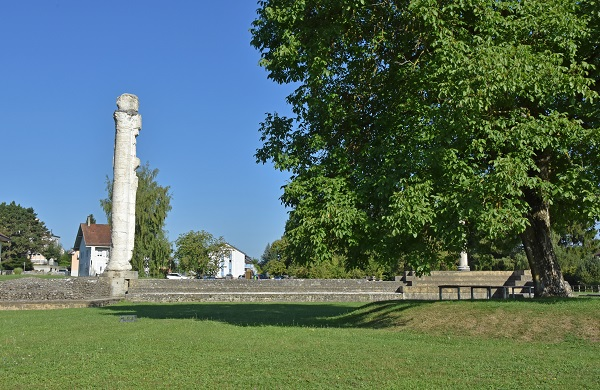

Ein paar unserer Geheimtipps für Sie
Kaiserliche Bankgeheimnisse
Avenches - die Goldbüste des Kaisers Mark Aurel zeugt heute noch von der kaiserlichen Aufmerksamkeit, die Avenches zu Römerzeiten genoss. So manch Bänklein lädt ein, die glanzvolle Vergangenheit der ehemaligen Hauptstadt der Helvetier vor dem inneren Auge wieder auferstehen zu lassen. Das Amphitheater wird übrigens demnächst mit nagelneuen Bankgeheimnissen aufwarten!
Weitsichtige Bankgeheimnisse
Aussicht ohne Höhenluft? Das Gros-de-Vaud profitiert von seiner zentralen Lage. So manches Bankgeheimnis hat dort sowohl den Jura, den Jorat, die Voralpen und manchmal sogar den Mont Blanc als Augenzeugen :-)!

Das meistgeklickte Bankgeheimnis
Hier wird in Zukunft automatisch jenes Bänkli präsentiert, welches in der vergangenen Woche die meisten Online-Aktivitäten aufwies. Lassen Sie sich inspirieren!
Inzwischen können Sie ein Ur-Schweizer Bankgeheimnis geniessen: Gelegen am Fronalpstock, eingefangen von unserem Bänkli-Botschafter Hans-Peter Bruder!

Unser jüngstes Bankgeheimnis
Ein herzliches Willkomen unseren Jüngsten! Hier sehen Sie in Zukunft das neueste aller virtuellen Bankgeheimnisse!
Um Ihnen die Wartezeit bis zur Inbetriebnahme dieser Funktion zu verkürzen, rollen wir für Sie den roten Teppich aus und entführen Sie zu einem Geheimtipp: Die roten Bänkli von Wollerau, mit Sicht auf den Zürichsee!
-kl.jpg)
Das Impressum finden Sie hier!
Unsere Datenschutzerklärung
Piktogramme von Isabelle Keyeux und Katharina Peter
Hauptfoto: Bänkli in Engelberg, von H.P.Bruder